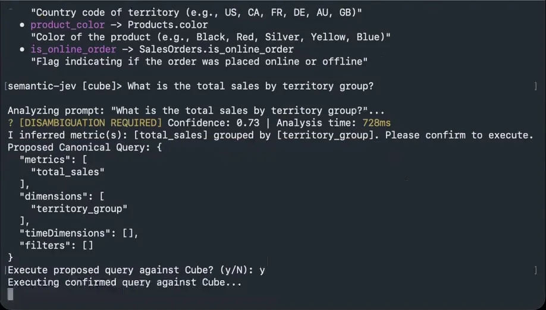
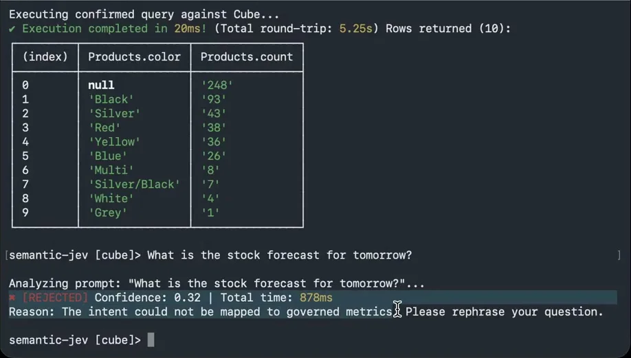

体験
判断と実行のあいだに、人の確認が入る。クエリ案は実行の前にJSONで見せられ、確認の既定値はNo（y/NのN）になっている。
- 0.73の質問は「DISAMBIGUATION REQUIRED」とされ、推測した内容を文で述べてから確認を求める。確認なしで実行される条件があるかは、動画からは分からない。
- 0.32の質問は実行に進まない。理由と、言い換えの依頼が返る。答えを作らずに断る経路が、正常な出力として用意されている。
- 対象は、あらかじめ定義された指標とディメンションに限られる。断る理由も「定義された指標に対応づけられない」と、この範囲で説明される。
- Analysis timeとTotal timeが毎回出る。判断にかかった時間と、全体の往復時間が分けて表示されている。
キャプチャ
{kind=link}

（原寸の画像を開く）{kind=link}

（原寸の画像を開く）見る箇所1枚目の「DISAMBIGUATION REQUIRED」とConfidence、Proposed Canonical Query、実行前の (y/N)。2枚目の結果表と、「REJECTED」の行と理由
入力から画面の変化まで
-
判断への入力
指標とディメンションの一覧（名前、対応する列、説明）と、自然文の質問。例は「What is the total sales by territory group?」。
-
Jevの判断
質問を、一覧にある指標とディメンションへ対応づける。1枚目はtotal_salesをterritory_groupで集計する案を、Confidence 0.73、Analysis time 728 msで出している。2枚目は「What is the stock forecast for tomorrow?」に対してConfidence 0.32となっている。
-
結果がUIをどう変えるか
クエリ案のJSON、「Please confirm to execute.」、「Execute proposed query against Cube? (y/N)」の確認、実行後の結果表と所要時間。Confidence 0.32の質問は「REJECTED」となり、「The intent could not be mapped to governed metrics. Please rephrase your question.」と返る。
- 判断型の見立て
- Choice推定
- 質問を一覧にある指標とディメンションへ対応づけていることからの見立て。質問型とConfidenceの計算方法は動画に出ていない。
Jevとの適合
自由文を、有限の指標とディメンションへ対応づける判断は、Jevに向く。値を実行の可否に使う設計は参考になるが、0.73や0.32をどこで区切っているか、その区切りが妥当かは、この動画からは評価できない。
確認範囲と未確認事項
作者の投稿動画から静止画を確認。投稿で示されたリポジトリは調査時に404で、コードは確認できていない。根拠は投稿と動画だけである。画面はターミナルで、一般向けのGUIではない。
- 確認済み動画から得た2枚の静止画に見える指標の一覧、質問、Confidence、クエリ案のJSON、(y/N)の確認、結果表、「REJECTED」と理由の文
- 未検証確認なしで実行される条件の有無、しきい値、対応づけの精度、Cube以外での動作。投稿で示されたリポジトリは調査時に404で、コードを確認していない
- 推定扱い質問型（Choiceと見立て）。Confidenceがどの値から計算されているか
- 引用動画から必要な範囲の静止画を切り出して引用（ウィンドウのタイトルバーを除いた）。権利は作者に帰属する